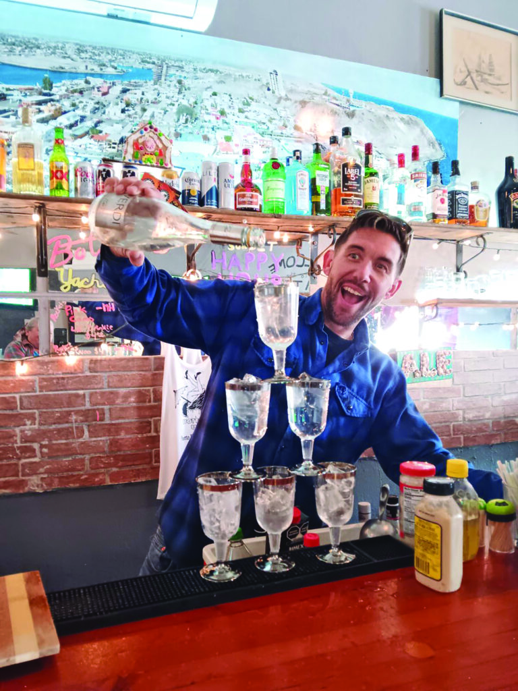
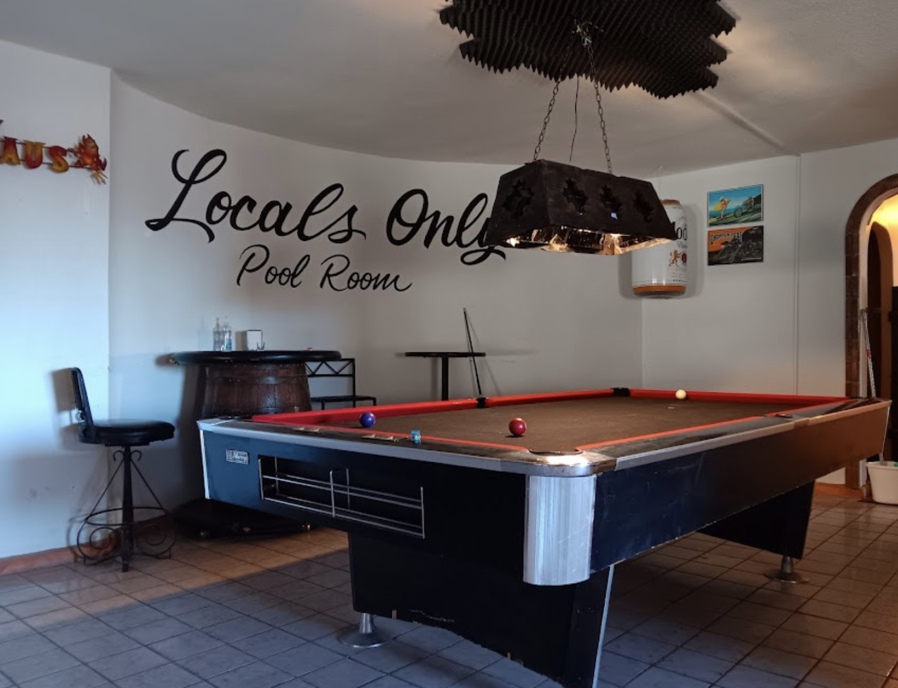
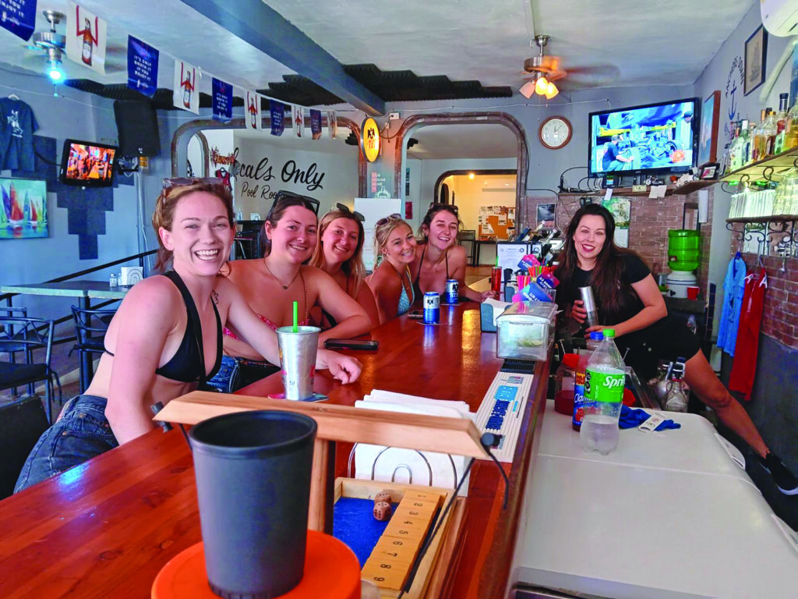
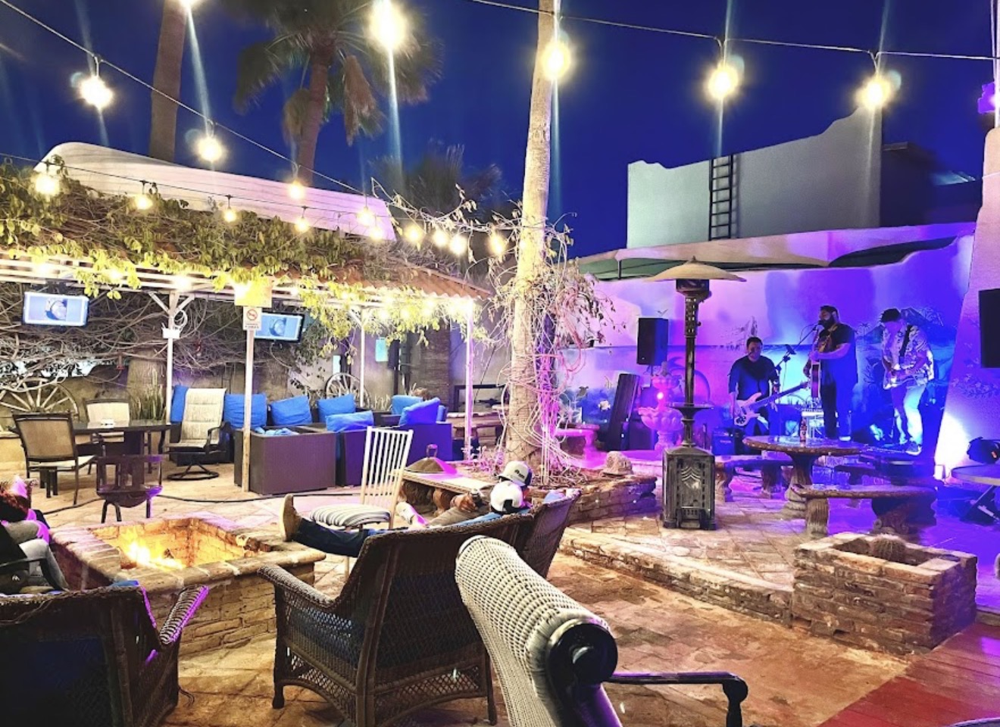
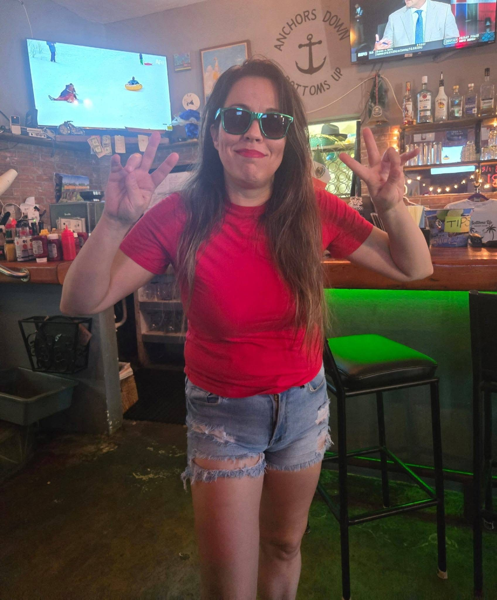
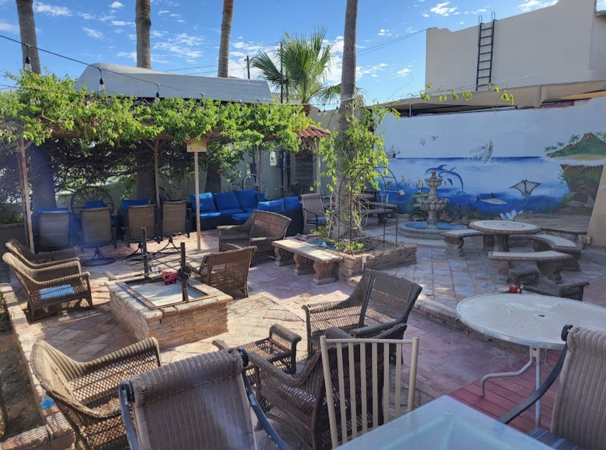

The same day Jimmy Buffett passed. For Danny, that felt like something.
Danny Davis has been coming to Puerto Penasco since he was a kid. His grandfather fell in love with Rocky Point in the 1960s and passed that love down. Danny grew up with this place in his blood, right down to the Margaritaville tattoo. Opening a bar here was never really a business decision. It was just the next thing that made sense.
He opened the doors on September 1, 2023, and by coincidence or something more, it was the same day the world said goodbye to Jimmy Buffett. For someone whose grandfather shaped his love of this coastline, it felt like a passing of the torch. Danny took it seriously.
We're a neighborhood bar, a community center where everyone knows each other or feels at home.Danny Davis
Three years in, that's still exactly what it is.

Come in once and you feel like a regular. Come in twice and the staff knows your name. People drive down from Arizona every weekend. They bring their friends. Those friends start coming on their own. That's how this place works, and Danny loves every bit of it.
There's a full indoor bar with a brick face, a long wood counter, and a bottle wall that tells you exactly what kind of place this is. The Locals Only Pool Room is around the corner. Outside, the patio has blue cushioned sofas, string lights, a pergola, and a fire pit stage where live bands play every Friday. Karaoke with Tony Lake on Thursdays. Chickin Sh*t Bingo every Saturday at 1 PM. Pool, Giant Jenga, foosball, Mexican Train Dominoes, chess. Something going on every day of the week.
Open seven days a week. Always glad you came.



Danny says his goal is simple: "Our staff knows you by name and you feel at home, not just like a one-time tourist." That's the whole point of this place. Good attitudes and good vibes are not the slogan. They're the actual policy.
The reviews back it up. People who come once tend to come back. People who come back bring their people. That cycle is what Bottom's Up is built on.
4.9 on Google across 170 reviews. We're proud of that number. We're more proud that people keep showing up.

